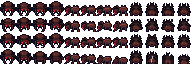

Click a solid cell to dig. Edges reconnect immediately; reset restores the original layout.
Road footprints become continuous banks with rounded corners, overlapping shelves and a shaded south face. Quiet interiors prevent a checkerboard of mushrooms.
The upper-left silk chamber is a spider nest. The upper-right brood colony uses swollen chambers and pale sacs. Mouths face the open floor; the nest cores stay solid.
A broad junction crosses the centre. A narrow mycelium passage remains open below it. Sparse cold gills punctuate the purple, leaving the floor dark and readable.
